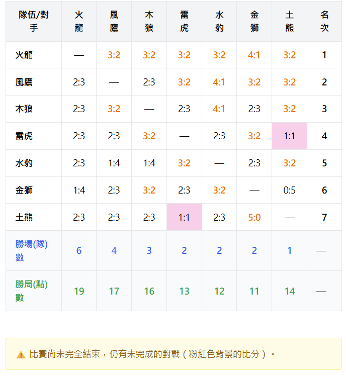

📊 桌球比賽系統 - 比分表功能說明書
📋 文件資訊
文件名稱：scoring-detail.html
版本：1.1
更新日期：2025年5月
適用對象：系統管理員、比賽參與者、觀賽者
🎯 功能概述
比分表是桌球比賽系統的核心顯示模組，提供即時、動態的比賽結果展示。此功能具備以下特色：
- 即時更新：當任何一場對戰完成單局比賽時，表格立即反映最新比分
- 智能排名：根據勝場數、直接對戰結果及勝局數進行多層級排名
- 視覺提示：透過顏色標示區分比賽狀態和勝負結果
- 詳細記錄：比賽結束後可查看完整的個人對戰歷程
🖥️ 介面說明
主要顯示區域
比分表採用矩陣式設計，行列分別代表對戰的兩支隊伍：
- 橫列（Row）：主隊伍
- 直行（Column）：對戰隊伍
- 交叉格：顯示主隊伍對戰隊伍的比分結果
- 名次欄：右側顯示各隊伍的最終排名
比分格式說明
| 格式 |
說明 |
範例 |
| A:B |
主隊伍得分：對戰隊伍得分 |
3:1（主隊伍勝3局，對戰隊伍勝1局） |
| — |
同一隊伍（對角線位置） |
隊伍不與自己對戰 |
| - |
尚未開始或無比賽數據 |
比賽尚未安排或進行 |
顏色標示系統
- 🟠 橘色字體：勝利的比分（該格主隊伍獲勝）
- 🩷 粉紅色背景：比賽進行中，尚未完成所有局數
- 🟢 綠色統計：勝局數統計行
- 🔵 藍色統計：勝場數統計行

圖1：比賽進行中的粉紅色背景提示（not_flished.png）
📈 比分計算邏輯
即時計分機制
⏱️ 動態更新時機：比分表會在以下時刻自動更新
- 任何一局比賽結束時
- 比賽結果被記錄到系統時
- 管理員修正比分時
- 用戶重新載入頁面時
⚠️ 重要提醒：粉紅色背景的格子表示該對戰尚未完成所有局數，比分可能還會變動。
🏆 排名規則
多層級排名邏輯
系統採用三層級排名機制，確保排名的公平性與準確性：
🥇 第一優先：勝場(隊)數
🥈 第二優先：直接對戰結果
- 當兩支隊伍勝場數相同時
- 直接比較兩隊間的對戰結果
- 直接對戰獲勝者排名較前
🥉 第三優先：勝局(點)數
- 當存在循環勝負關係時使用
- 例如：A勝B、B勝C、C勝A
- 統計所有比賽中獲勝的局數總和
- 勝局數多者排名靠前
排名計算範例
| 情況 |
判斷方式 |
範例 |
| 勝場數不同 |
直接按勝場數排序 |
A隊3勝 > B隊2勝 > C隊1勝 |
| 兩隊勝場數相同 |
比較直接對戰結果 |
A、B隊同為2勝，A擊敗B，則A > B |
| 循環勝負 |
比較勝局數 |
A勝B、B勝C、C勝A，按勝局數排序 |
✅ 排名更新：排名會隨著比賽進行即時更新，確保參賽者和觀眾能掌握最新的競爭態勢。
⚡ 即時更新機制
📱 使用者操作：如果比分沒有即時更新，建議重新載入頁面以確保顯示最新資料。
📝 詳細對戰記錄
功能啟用條件
🔐 詳細對戰記錄僅在以下條件滿足時顯示：
- 比賽狀態為「已結束」
- 管理員已確認所有比賽完成
- 所有隊伍間的對戰都已記錄完整比分
記錄內容說明
📊 詳細記錄包含以下資訊：
- 對戰組合：具體的隊伍對戰配對
- 局次資訊：第幾局的比賽
- 選手組合：每局的具體出場選手
- 局分結果：該局的詳細得分
- 勝負標示：🏆 標示每局的獲勝方
查看方式
👆 操作步驟：
- 等待管理員結束比賽
- 在比分表下方找到「詳細個人對戰記錄」區塊
- 點擊該區塊展開/收合詳細記錄
- 瀏覽各場比賽的具體對戰情況
🔧 管理員功能
比賽結束控制
🎯 管理員可執行的操作：
- 監控比賽進度：查看哪些對戰尚未完成
- 結束比賽：確認所有比賽完成後標記比賽結束
- 解鎖詳細記錄：比賽結束後開放詳細對戰記錄查看
狀態提示訊息
| 情況 |
顯示訊息 |
可執行動作 |
| 可以結束比賽 |
顯示「結束比賽」按鈕 |
點擊結束比賽 |
| 有未完成對戰 |
黃色警告：⚠️ 比賽尚未完全結束 |
等待所有對戰完成 |
| 比賽已結束 |
顯示詳細對戰記錄按鈕 |
查看詳細記錄 |
🎉 比賽結束後：系統會自動更新比賽狀態，並開放詳細對戰記錄的查看功能。
📞 技術支援
如有任何問題或建議，請聯繫系統管理員
© 2025 桌球比賽管理系統 - 比分表功能說明書